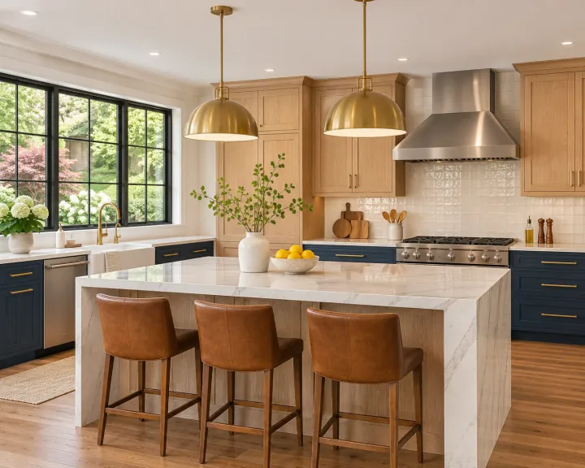
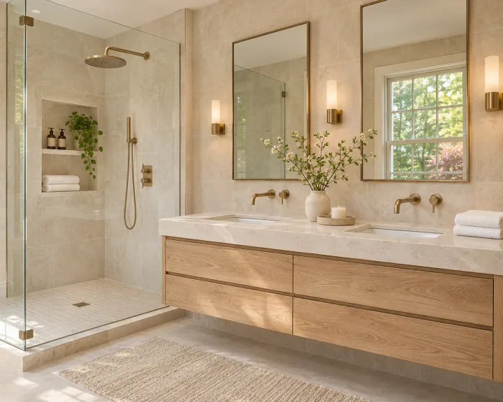
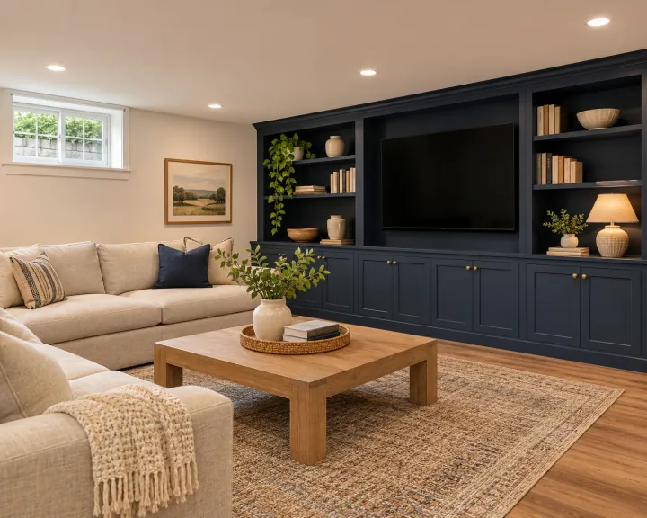

Blue Hammer Remodeling · Olney, Maryland
A better home.
Starts here.
Kitchen, bathroom, and interior remodeling designed around the way you live.
Based in Olney. Serving homes across Maryland, DC and Virginia within about 40 miles.
Schedule a ConsultationYour priorities. A written scope. A clear next step.

What we do
Make room for what’s next.
Start with the room you want to change. We’ll talk through how it needs to work for you.

Kitchen Remodeling
Layout, cabinetry, and finishes for the way you cook and gather.
Explore kitchen remodeling
Bathroom Remodeling
Better storage, a considered layout, and finishes that fit your routine.
Explore bathroom remodeling
Basements & Interiors
Make more of your lower level, living areas, and everyday spaces.
Explore basements and interiorsStarting with something smaller? Tell us about the repairs you have in mind.
Ask about a small repairHow it works
A clear path from idea to home.
Tell us your vision
Share your goals, the space you want to improve, and your timing.
Plan the details
Talk through the layout, materials, and a written scope before moving forward.
Bring it to life
Follow the agreed plan through the work and the final walk-through.
Close to home
Based in Olney.
Built around your home.
We work within about 40 miles of Olney, Maryland, including Montgomery and Howard County, Washington, DC and nearby Northern Virginia. Share your ZIP code so we can confirm your location.
See all service areasDo I need a finished design before contacting you?
No. You can start with a few saved photos, a list of what is not working, or drawings you already have. The consultation helps us understand the space and the next planning steps.
How is the cost of a remodel determined?
The scope, room size, existing conditions, and material selections all affect the cost. We discuss those details before preparing a project-specific written proposal.
Can I start with one room or a smaller repair?
Yes. Tell us about the space or repair you have in mind. We will review the work and your location to see whether the project is a fit.
What happens after I request a consultation?
We review your project details and contact information, then follow up about the next step. Sending the form is a request; an appointment is confirmed with you separately.
Let’s talk about your home
Ready to make your space work better?
Tell us what you have in mind. We’ll review your project and talk through the next step together.